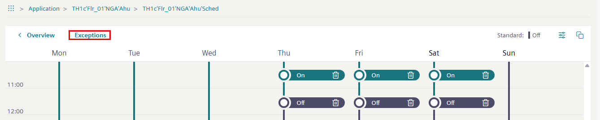
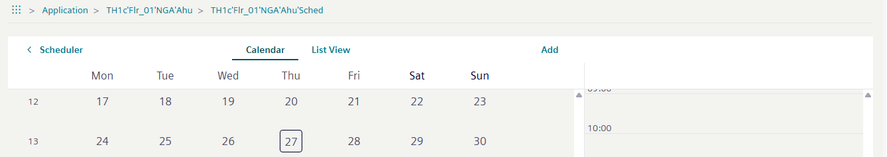
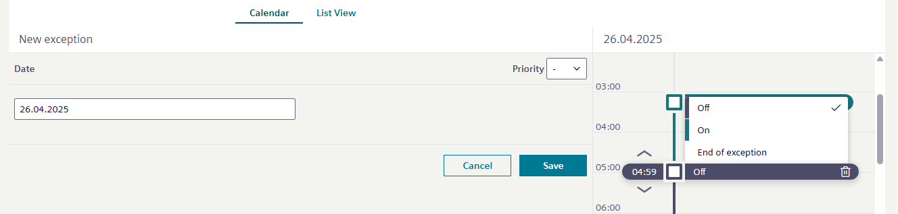
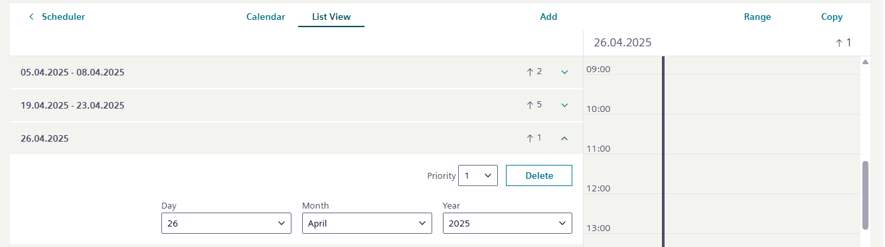

Exception schedules
Exception schedules are used to manage deviations from the weekly schedule.
- When working online, exception dates and times can be added directly to the scheduler object.
- Calendar objects display in the associated scheduler object under Exceptions.
Working in the calendar view
- Select Exceptions mode.

- The Exceptions dialog opens.

- Select Add.
- Select one of the exception options:
- Date

- Recurring

- Date range

- Weekday

- Select Next.
- Depending on the selected option, enter the information for the date exception.
Note: Depending on the screen size, the hours exception can be entered directly. If the hours range is not visible, select Next. - Enter the exception time, priority and the corresponding operation mode, for example, on/off.

- Select Save.
- The exception is created and downloaded to the device.
Working in the List view
All existing exception programs are listed in the List view and can also be added, edited or deleted here if necessary. The priorities entered can also be checked for uniqueness.
- Select List view.
- Add, modify or delete entries.
- Select Save.
